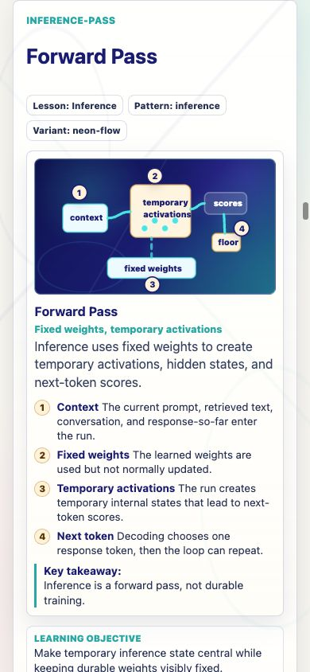
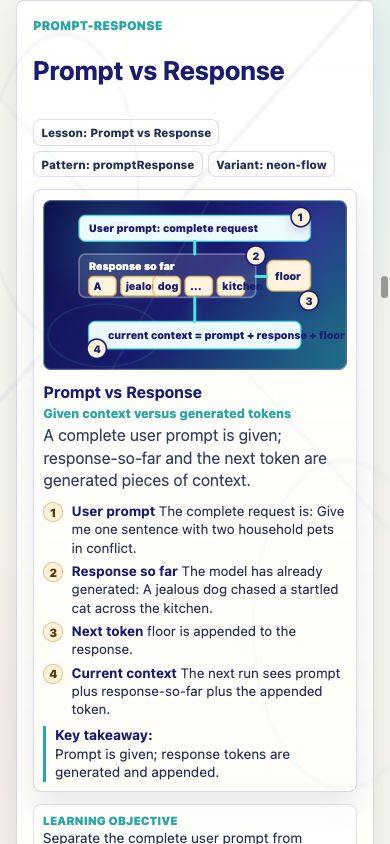
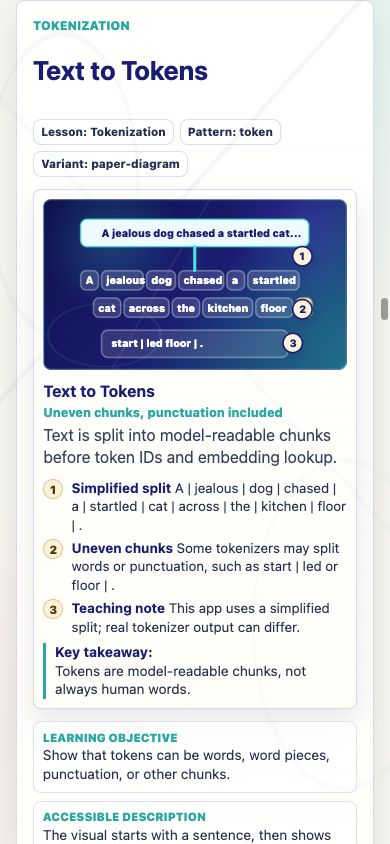
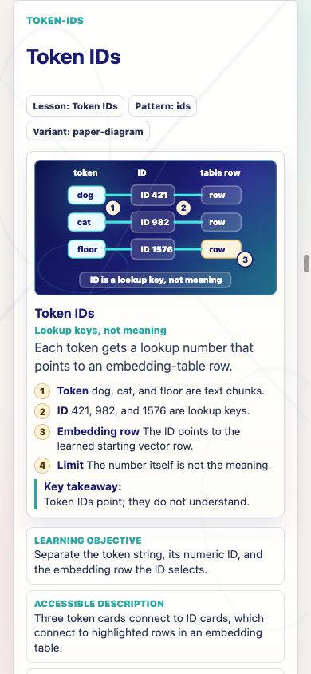
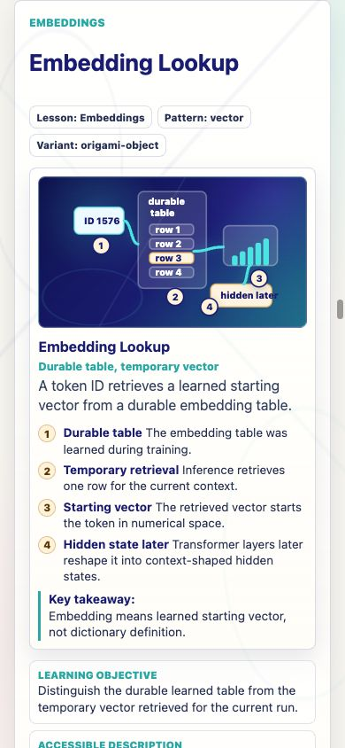
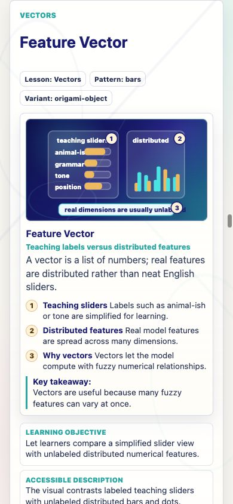
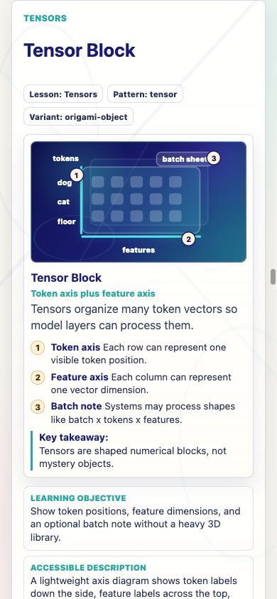
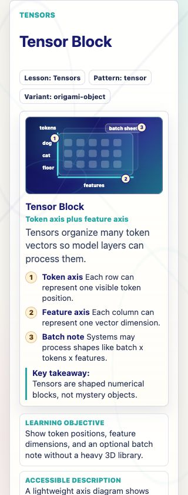

Prompt Life v0.19.1
Seven existing Morning Commute cards were polished without adding new cards, games, generated PNGs, heavy 3D libraries, progress changes, checkpoint-randomization changes, or badge changes.







